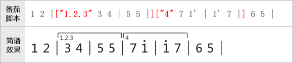
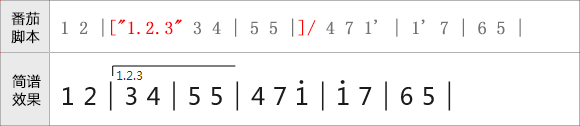
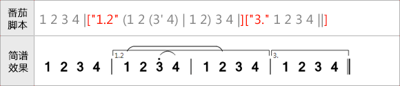
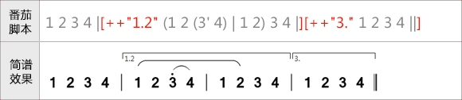
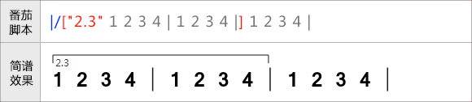

跳房子只能在小节线上标注，使用“[]”表示。“[”表示起点，“]”表示终点，跳房子线支持跨行。
小节线下的备注信息，则在小节线后使用引号括起来（类似音符备注）即可。
为了方便后期导出MDID和软件正确播放，跳房子的备注文字建议使用数字表示。
用法如下图所示：

还有一种情况，当跳房子的段落太长的时候，一般跳房子只需要画到前两个小节，然后右侧无需封闭即可。
此中情况，可以在“[”号后面增加“/”符即可。如下所示：

跳房子与连音线等重叠问题
有些时候，跳房子默认的高度会与连音符重叠，此时可以在跳房子的“[”后加上“+”号进行调整，“+”号越多，跳房子里音符越远。
示例如下：
图1、跳房子与连音线重叠问题:

图2、通过“+”号调整跳房子线的位置

番茄简谱将在以后实现跳房子位置的自动调整，在此之前请使用“+”号手动调整。
行开头处的跳房子
跳房子标记只能写在小节线处，但是有些时候跳房子是从行头开始的，而行头却不应该有小节线。此时可以使用隐藏小节线“|/”处理。
如下图所示：
